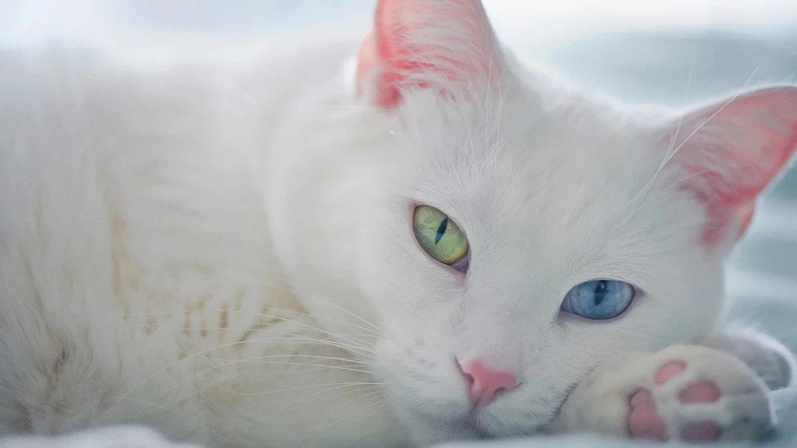
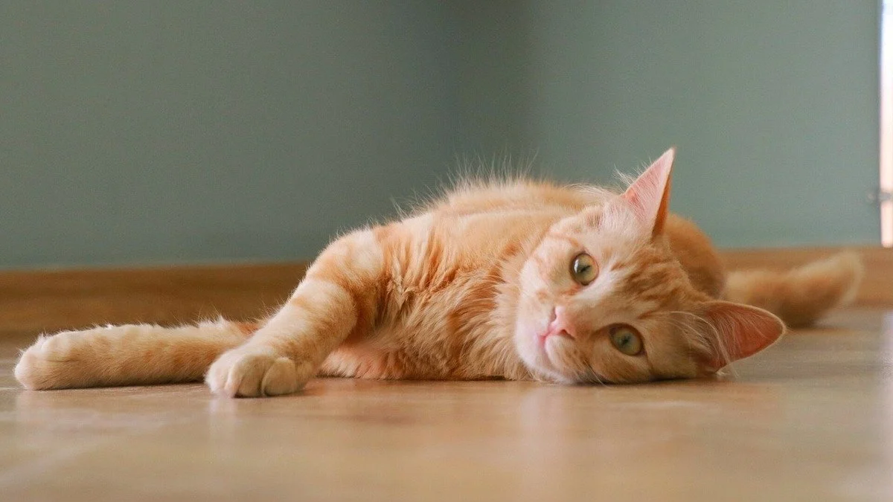

Коти — це не просто домашні улюбленці, а справжні члени сім'ї. Вони приносять радість, теплоту та комфорт у наші домівки. На цьому сайті ви дізнаєтеся більше про їхні звички, харчування та місця проживання.


Дізнатися більше
Чому саме вам потрібно взяти кота собі додому?
- Компанія: Коти — це чудові компаньйони, які завжди підтримають вас своєю присутністю.
- Зменшення стресу: Догляд за котом допомагає знизити рівень стресу та тривожності.
- Грайливість: Коти завжди знайдуть спосіб розвеселити вас своїми витівками.
- Незалежність: Вони не потребують постійної уваги, що робить їх ідеальними для зайнятих людей.
- Чистоплотність: Коти дуже чистоплотні і доглядають за собою самостійно.